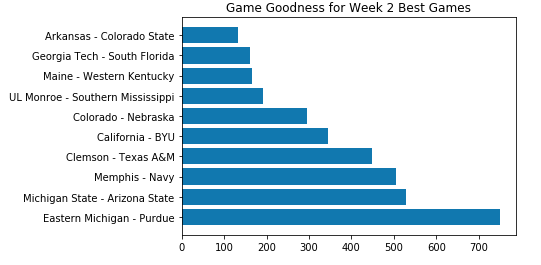
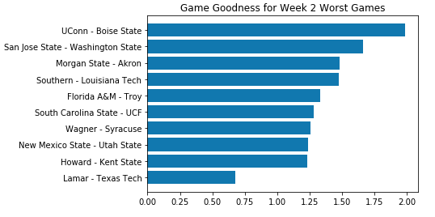

The "College Game Goodness Index"
By Derek Topper | September 11, 2018

As I was watching Arizona State's upset of Michigan State over the weekend, I began to ponder if this was the best game of the season so far. Obviously, any game where a highly ranked team loses on a last second field goal is going to have been a pretty good game, but I was curious if this was better than some of the other games of the week. For instance, the Colorado-Nebraska and Clemson-Texas A&M Games were also very close and I wondered if there was a someone objective way to identify which game had the highest entertainment value. I couldn't find anything, so I made one.
The College Football Game Goodness Index is a metric that measures how "good" any Division 1 College Football game was to watch. Using publicly available data from Sports Reference, Athlon Sports, ESPN and Massey Ratings, I created a dataset with over 50 variables for analyzing the quality of a given game. I got the idea for creating this metric from this video.
The CFGGI is an aggregation of three metrics to quantify a game's importance, quality of participating teams and the quality of the game itself.
Game Importance is calculated through a combination of how early in the season the game was played, average change in ELO for a team after a loss and the impact of the game on the postseason.
Team quality is an aggregation of both team's Massey Rankings, number of returning starters, conference quality, prior season wins, prior season draft picks, prior season awards won, coach quality, as well as offensive and defensive statistics like average yards, average points scored and allowed, number of first downs generated and allowed and turnovers gained.
Lastly, game quality is measured by a mixture of how late the go-ahead points were scored, how close the game was, how yards and points the game had, if the game was an upset and whether the game was nationally televised, a multiplier both for hype and number of views.
Ultimately, the CFGGI generated claimed that Eastern Michigan, a team from a subpar Mid-American Conference, who upset the Big Ten's Purdue after a last second Field Goal on the road, was the victor in Week 2's best game. However, the expected best games were not far behind.
Arizona State's upset of #15 Michigan State was merely the second best game of the week. Other top games include Clemson and Texas A&M's thriller that came down to the wire, as well as Colorado's upset over Nebraska, in their first game in years. Our own Cal Bears, who beat BYU by 3, played in Week 2's fifth best game.
On the other side of the coin, Lamar lost to Texas Tech in glorious fashion by a score 77-0, in the CFGGI's worst game of the week.
The CFGGI did not like blowout games. This is obvious by the fact that winning teams won by 46.3 in the CFGGI's ten worst Week 2 games. While I enjoyed watching my personal favorite team, the Syracuse Orange, decimate Staten Island's Wagner College, it is obvious that an objective viewer would have found this game boring, as Syracuse had outscored Wagner's final points total, by the end of the game's first twenty minutes.
Ultimately, this metric is not perfect, as all metrics are subjective, but I attempted to incorporate many facets of what makes one game better than another. It serves as a decent proxy for the quality of an individual game and is useful for anyone hoping to empirically examine what game was better.
Note: This data will not be updated each week.
The code is available here for anyone who wants to see more of how the metric was calculated.
A video explaining this metric is available here